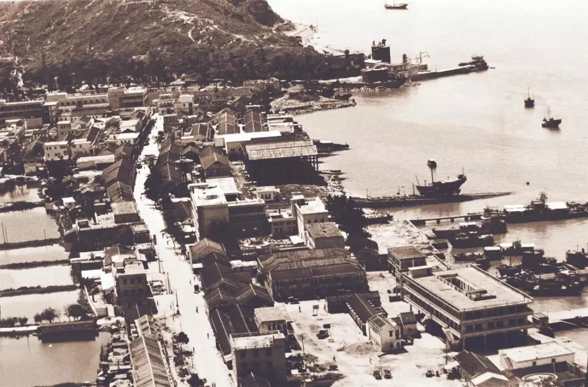
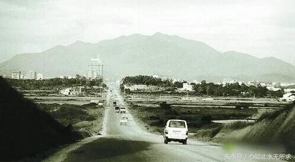

Shenzhen was a tiny fishing village in 70s. One spring in 1979, an old man drew a circle around the south China sea. Since then, the city of Shenzhen has embarked on a journey of wonders.
Above, a stowaway who was deported to the mainland in the 1970s. In the early 1950s, Britain began to seal the border. Over the next three decades, one of the reasons the border town of Shenzhen became famous at home and abroad was that it continued to smuggle people in. From the 1950s until the founding of Shenzhen, nearly 300,000 people from Bao 'an county were smuggled into Hong Kong.
As the images above, it's "Shennan Ave"- the first street which made of concrete.
Press back to go back.